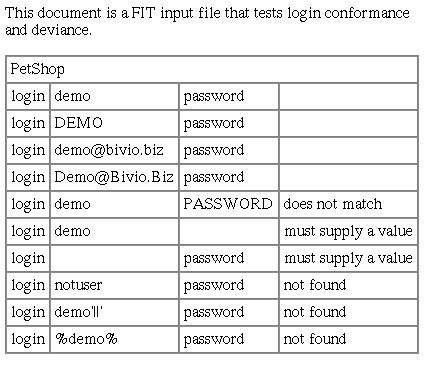

about Extreme Programming
with Perl
| Previous: Chapter 5: Iteration Planning | Next: Chapter 7: Tracking | |
Acceptance tests are the functional specifications of XP. Each story card is elaborated in one or more scripts by the customer. The test suite is run regularly on the entire application, and the programmers can use the scripts to diagnose implementation defects. The purpose of this chapter is to demonstrate how the customer can create automated acceptance tests. Acceptance tests are explained in general and with example test scripts. An alternative approach called, data-driven testing, is presented that allows the customer to generate tests using ordinary office software, such as, spreadsheets and word processors. Acceptance TestsAcceptance tests, also known as, customer tests and functional tests, validate the customer's view of the application. They are distinct from unit tests, which validate the programmer's view of the software internals. The programmers help write acceptance tests, but as with writing story cards, the customer needs to be involved directly. Otherwise, customer expectations probably won't be met by the application. When writing tests, the customer fills in the details the story cards leave out. Each test encodes one or more specific user scenarios. When the test runs, it performs the same actions a user would, and, ideally, validates what the user would see. An acceptance test simulates the user automatically. AutomationAcceptance tests need to be automated to be effective XP tools. You can write manual tests, that is, tests where a person acts as the simulated user. However, manual tests don't fit well with XP, because they don't provide the consistent, instantaneous feedback that XPers crave. Manual tests have their place, and the existing literature covers them well.[2] This book is about empowering teams to use XP, and manual tests are not tools in a typical XP project.[3] The trade-off between a manual and automated test is cost. Automation has a higher up front cost, but in XP the cost is amortized quickly. Acceptance tests are run nightly or more frequently in an XP project. When dealing with physical devices, such as printers, automation is expensive. For typical Perl applications, however, inertia is a greater barrier to automation than cost. I take a top-down approach to overcome automation inertia. Let the customer write or specify the test, and then figure out how to implement it. Tests can be implemented partially yet still be valuable. As always in XP, take it one step at a time, and do the simplest thing that could possibly work. I'm Gonna Buy Me a Dog[4]The examples that follow test PetShop, a demonstration, open source, online pet store.[5] The specifics of the scripts could apply to most online stores so you don't need to try PetShop to read the examples. Potential buyers add items to a shopping cart while they browse or search a hierarchical catalog. To complete the check out, they must login or register. This first script tests several ways to find a Corgi, a small herding dog. The stories tested by the script are:
The test script in Perl syntax is: The first line in the script tells the test framework[6] what we are testing. test_setup establishes the functions, or actions, used by the test. Since this is an online store, the actions include: home_page, follow_link, search_for, and add_to_cart. Acceptance test scripts are similar to the script to a movie or play. The roles are the user and the computer. The script shows the user role, or what the user does and expects to see. For example, the second section of the script follows the site's hierarchy to put a dog in the cart. It goes to the home page, selects the Dogs animal category, drills down to the Corgi breed, and, finally, puts a Female Puppy Corgi into the cart. These are the actions of an ordinary user. The test script is run through an interpreter, a program that translates the functions into interactions with the application. The programmers implement the functions on demand for the customer. The functions are responsible for checking the computer's role in the script. For example, this test script states that the user clicks on the Dogs link on the home page. If the Dogs link is missing from the home page or spelled incorrectly, the follow_link action stops and indicates that the test script has failed. This approach is called fast fail, and makes it easy to write and maintain test scripts. In keeping with the movie script analogy, it's like when the director sees computer screwing up its lines, and yells, "cut!". Everybody stops. The director corrects what's wrong, and the actors start over again. The next section tests the search facility. We should be able to find our dog by searching for corgi, CORGI, and dogs wales. We aren't particularly interested in Corgis[7], rather our goal is to test that the search mechanism is case-insensitive and supports multiple words. And, most importantly, the list of search results allows the buyer to place found animals in their cart easily. Shoppers should be given an opportunity to buy what they find. Group Multiple PathsThe previous example demonstrated testing multiple paths, that is, different ways of doing the same thing. In one case, we searched for a Female Puppy Corgi hierarchically, and then we used the search box to find the same dog using different keywords. Here is another example that demonstrates multiple paths: This example tests the two ways you can remove animals from the cart. remove_from_cart uses a button labeled Remove to delete the item from the cart. update_cart allows buyers to change the quantity desired. Setting it to zero should have the same effect as remove_from_cart. Most applications allow you to do something in more than one way, like in this example. Grouping similar functions in the same test is another organizational technique for your acceptance test suite. It also provides an opportunity to talk about an application cross-functionally. The creation of test scripts is a collaborative effort, much like pair programming. This sort of detailed matters, and probably won't come up during the planning game. The details emerge when the stories and their acceptance tests are being implemented. The test suite opens a communication channel between the programmers and the customer to discuss application consistency and other technical details, such as what to do when the user enters an unexpected value. Without Deviation, Testing Is IncompleteThe acceptance test suite also checks that the application handles unexpected input gracefully. For example, if the user enters an incorrect login name, the application should tell the user not found or something similar. The technical term for this is deviance testing. It's like kicking the tires or slamming the car into reverse while driving on the highway. The previous examples are conformance tests, because they only validate using the application for its intended purpose. When you write a deviance test, you break the rules in order to ensure the application doesn't do the wrong thing, such as displaying a stack trace instead of an error message or allowing unauthorized access. For example, here's how we test login conformance and deviance of the PetShop: The first section tests conformance. We login as demo and DEMO to test that user names can be case insensitive. The PetShop allows you to login with an email address, case insensitively. Passwords are case sensitive, however. The next section expects the application to return an error message that contains does not match when given a password in the wrong case. This is a deviance test, and the test_deviance that begins the next section tells the test framework that the subsequent statements should fail and what the expected output should contain. This is an example where the test script specifies the computer's role as well as the user's. The application should ask the user to supply a value, if either the login name or password fields on the form are blank. The next section tests this. This case might be something a programmer would suggest to the customer. The customer might decide that must supply a value is too computer-like, and ask the programmer to change the application to say something like, Please enter your login ID or email address. In the last section, we test a variety of not found cases. The first case assumes that notuser is not a user in the system. The test suite database is constructed so that this is the case. The last two cases are highly technical, and are based on the programmer's knowledge of the application internals, that is, SQL, a database programming language, is used to find the user. Some applications do not correctly validate application input, which can allows the user unauthorized access to system internals. This is how computer virii and worms work. This test case validates that the user name is checked by the application before it is used in a low-level SQL statement. If the user name syntax is not checked by the application, one of the last two cases might allow the user to login, and the deviance test would fail. Note that we didn't test notuser without a password. It's not likely that an invalid user could login without a password when a valid user couldn't. In testing parlance, the two tests are in the same equivalence class. This means we only need to test one case or the other but not both. We use equivalence classes to reduce the size of the test suite. A large application test suite will have thousands of cases and take hours to run. It's important to keep the runtime as short as possible to allow for frequent testing. And, as always, the less code to do what needs to get done, the better. Subject Matter Oriented ProgrammingAnother way to minimize test length is letting the problem, also known as subject matter, guide the development of the functions used by the scripts. The customer is probably not a programmer. Moreover, the customer's terminology has probably been refined to match her subject matter. The programmers should let the customer choose the function names, and the order and type of the function parameters. The language she uses is probably near optimal for the subject and workflow. The process of bringing the program to the problem is what I call, subject matter oriented programming (SMOP). It is what XP strives for: creating an application that speaks the customer's language. The acceptance test suite is probably the customer's most important design artifact, because it encodes the detailed knowledge of what the application is supposed to do. If she or her co-workers can't read the tests, the suite's value is greatly diminished. The design and implementation of the acceptance test suite evolves as the customer encodes her knowledge. The programmer may need to help the customer to identify the vocabulary of the subject matter. Subject matter experts sometimes have difficulty expressing what they do succinctly. The programmer needs to be part linguist, just like Larry Wall, Perl's inventor. Unlike other language designers, Larry lets the problems programmers face dictate the solution (the programming language) they use. Perl is not prescriptive, in linguistics terms, but descriptive, evolving to meet the language used by programmers, not the other way around. Enough theory. I'm in danger of getting lost in the solution myself. If you are a programmer, you'll learn how to implement a subject matter oriented program in the It's a SMOP chapter. I'll get back to the customer, and another method by which she can create the acceptance test suite. Data-Driven TestingThe test examples up to this point have been written in Perl syntax. While I fully believe just about anybody can follow these simple syntactic conventions, customers may balk at the idea. Ward Cunningham, a well-known XPer, has taken subject matter oriented programming to a new level. His framework for intergrated testing (FIT) lets customers write acceptance tests in their own language using their own tools, office applications, such as, word processors and spreadsheets. Here's the login test translated as a FIT document: 
FIT ignores all text in the document except for tabular text. The tables contain the text inputs and expected outputs. This allows the customer to document the test, and to have one document which contains many tests. The order of the columns and what they are for is worked out between the customer and the programmer. Once that's done, the framework does the rest.[8] Just like the Perl examples earlier, the customer must specify the test language interpreter, PetShop. In this type of FIT test, the customer enters actions (login) on a row-by-row basis. The programmer can create new actions. The cells to the right of the action name are parameters. The login action accepts a user name, a password, and an error message. If the there's no error message, login tests that the login was successful. The subject matter may suggest a different organization for the tables. For example, here's a denser test format for a simple math module:[9] As with the login test, the first line contains the test language interpreter, SimpleMath. The next row lists the actions in a columnar format. The first action sets an x value, the next sets y, and the last two columns test adding (sum)) and subtracting (diff). The subsequent rows contain a test in each cell of the table. The first row sets x and y to 1 and 2 and tests that sum and diff return 3 and -1. As you can see, this kind of FIT test gives the customer a clear overview of the acceptance test data using an ordinary word processor. With this style of testing, customers can create spreadsheets using formulas. The general term for using documents as test inputs is called data-driven testing. And, sometimes there's no practical alternative to using tabular data. On one project we developed, we needed to test the correctness of a pre-marital evaluation tool. Each partner in a couple had to answer 350 questions. The scoring algorithm related the couple's answers for compatibility. The customer had supplied us with the questions, answers, scores, and weights in tabular format. When we asked for acceptance test data, he simply added the answers for test couples in another column, and we generated the test suite by parsing out the data. As it turned out, the test data uncovered several areas that were misunderstood by the programmers. Without customer generated test data, the software would have contained critical defects. Empower The Customer to TestWhether the customer uses a spreadsheet, a word processor, or Perl, she can write tests. And, she needs to. No one else on the team knows the subject matter better than she does. Getting started is the hardest part. Take the simplest and most straightforward part of the application. Write a test outline for it together on the whiteboard. Implement that test, and run it together. After the first steps, you'll fill in more and more detail. As the suite grows with the implementation, the application will benefit from the regular exercise. The programmers will gain deeper insight into the subject matter. The customer will see the quality improve firsthand. And, everybody will benefit from the well-structured knowledge base encoded by your acceptance test suite. Footnotes
|
||
| Previous: Chapter 5: Iteration Planning | Next: Chapter 7: Tracking | |
Licensed under a Creative Commons Attribution 4.0 International License.